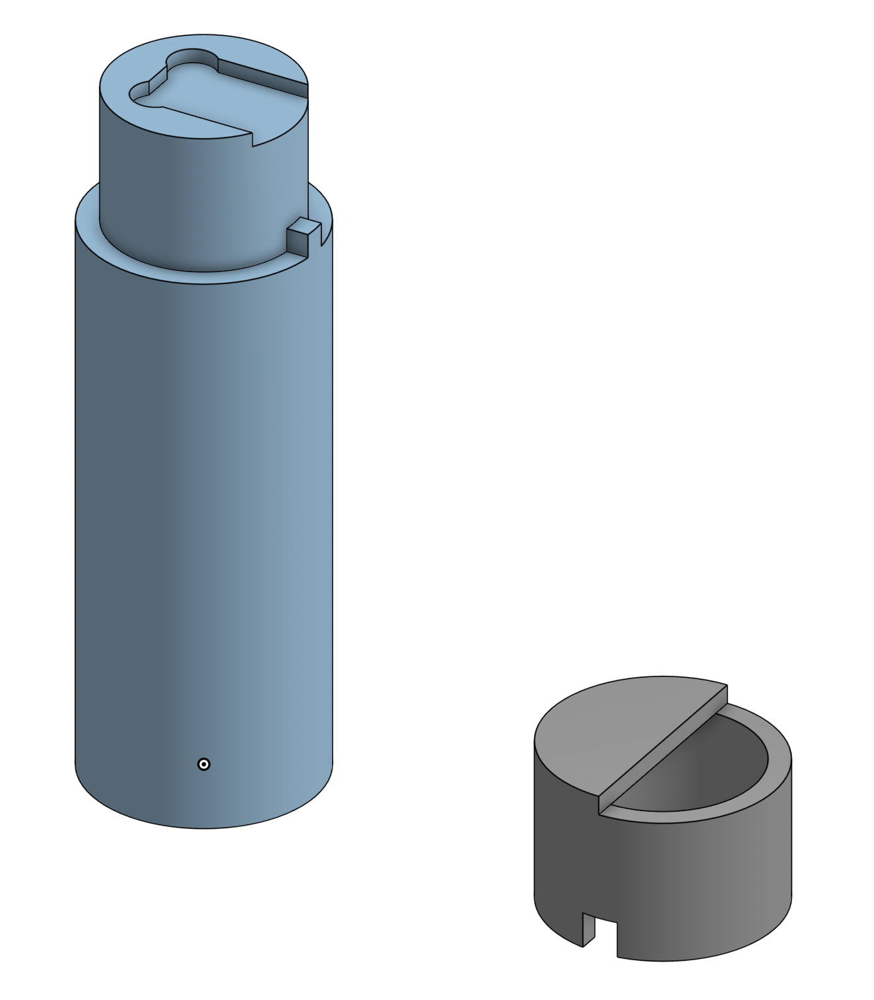

Diamond Holder
A researcher was shooting electrons at a doped diamond and wanted to have 4 different sections in the diamond that have been exposed to electrons for different amounts of time or at different strengths.
This was a particularly difficult job as the diamond was only 2 x 2 mm and the holder had to extend upwards into the machine through a 5 mm diameter hole. The holder also had to be made out of metal so it could be grounded, as there was a risk of the material melting/burning due to being hit by high speed electrons.
I designed a 3 part holder that consisted of a base plate, stem, and cap. The stem would be secured into the base plate with a screw and the cap would sit on top of the stem with notches to precisely cover half the diamond and then index in 90 degree rotations.
The cap and the stem were first turned on the lathe and then the diamond notch on the stem was machined on a CNC. The slot on the cap was manually machined.